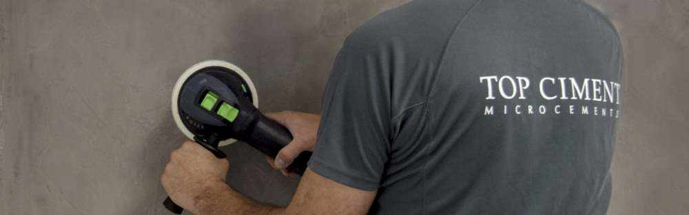
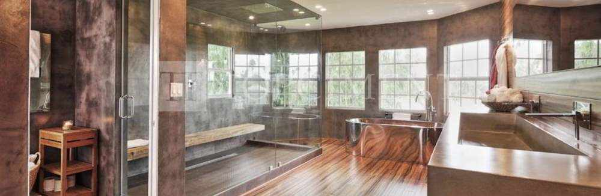
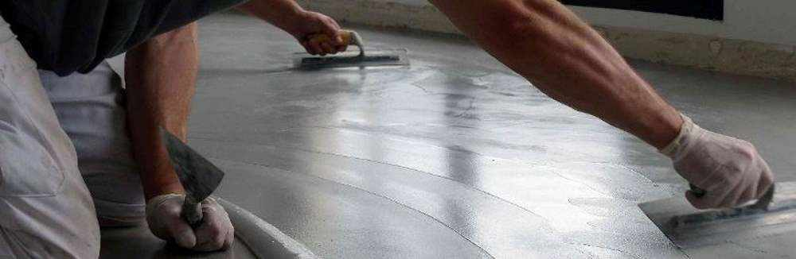

Mikrozement-Pools, die beste mögliche Wahl 2/10/2020
Es ist Zeit für Sonne, frische Luft und den Sommer zu genießen.
Aber vor allem ist es an der Zeit, einen Mikrozementpool für
beste Qualität und Stil zu haben.
Die berühmteste Haus in sozialen Medien wird mit Topciment entworfen 26/08/2020
 - copia.jpg)
Der Architekt Carles Faus hat das viralste Haus der
der Moment: ein wunderschönes Haus in Denia, das auffällt
für seine Leuchtkraft und seine Wirkung der Kontinuität dank der
Anwendung von Mikrozement.
Neue Rutschfrei Versiegelung! 30/03/2020

Topsealer WT Ansti Slip ergänzt die Familie der Siegellacke um
bieten ein Schlüsselprodukt für Mikrozementoberflächen an: die
Anti-Rutsch
Versiegler.
Topciment ändert seine Bild! 13/01/2020

Von Topciment haben wir beschlossen, einen Schritt weiter zu gehen, wenn es kommt zum Design und haben wir unser Image und die Ästhetik unserer Würfel aktualisiert.
Wir präsentieren unsere Bereich von Produkten Sttandard , gleiche Qualität und Eigenschaften, aber mit einem erneuertes Image viel visueller und aktueller, immer ohne Verlust der Wesen von Topciment .
Topciment präsentiert Efectto! 13/01/2020

Topciment präsentiert Efectto , die neue Linie von durchgehend und gebrauchsfertige dekorative Beschichtungen.
Efectto ist eine breite Palette von Produkten mit einer großen Vielfalt von Abschlüsse, die die in den kommenden Monaten enthüllt werden. Das erste dieser neuen Produkte um das Licht zu sehen ist Efectto Quarz.
Küche Arbeitsplatten mit Mikrozement?13/01/2020

Es gibt viele Arten von Materialien für Küchenarbeitsplatten, billiger und teurer, aber Topciment Mikrozement ist ein andere Option als alle anderen Lösungen auf dem Markt. Wir erzählen Sie alles hier, damit Sie die perfekte Küchenarbeitsplatte: widerstandsfähig, hygienisch, leicht zu reinigen und beibehalten.
Design und Komfort für Außenräume.13/01/2020

Topciment präsentiert die neueste Lösung für Außenbereiche, Terrassen, Balkone und Terrassen, der Microstone Mikrozement für den Außenbereich. Er ist das innovativste Produkt bei kontinuierlichen dekorativen Beschichtungen weil sie eine saubere, angenehme und avantgardistische Umwelt.
Wandverkleidungen mit Topciment 13/01/2020

Die Verkleidung der Wände in einigen der Räume oder des gesamten Haus, gibt uns Qualität und ein ästhetisches und nachhaltiges Ergebnis, insbesondere bei Wänden, die einer ständigen Hygiene und Reinigung bedürfen, wie zum Beispiel in der Küche oder im Badezimmer.
Topciment empfiehlt Festool für eine perfekte Anwendung. 13/01/2020

Eine gute Anwendung von Mikrozement hängt von mehreren Faktoren ab Faktoren, Qualitätsprodukte zu haben, die Anwendungstechnik, aber auch mit den besten Werkzeugen.
5 Tasten zu erfolgreiche Badrenovierung 13/01/2020

Wir verbringen viel Zeit im Badezimmer und geben nicht immer viel nachgedacht. Hier sind also 5 Tipps für eine erfolgreiche Renovierung Ihr Bad und geben Sie ihm den Stil und die Einrichtung, die es verdient.
Mistakes to avoid when combining colours 13/01/2020

In Topciment schlagen wir Ihnen einige Tricks vor, um erfolgreich eine Neudefinition zu erreichen die verschiedenen Räume des Hauses.
Microcement in kitchens13/01/2020

Mikrozemento ist ein neutrales Material, das sich in jeder Art von Küche, von klassisch bis modern, einschließlich industriell und nordisch.
Mikrozement ohne Probleme 13/01/2020

Wie können Probleme mit Mikrozement vermieden werden? Eine Anwendung mit Topciment Products garantiert Produkte von bester Qualität, zertifizierte Anwender und Experten für Mikrozement
Neue Produkte für die Reinigung und Pflege von Mikrozement 13/01/2020

Topciment bringt speziell vier neue Produkte auf den Markt formuliert für die Pflege, Wartung und Reinigung von Mikrozement.
Topciment erneuert mit CYPE um ein weiteres Jahr13/01/2020
Topciment hat seine Zusammenarbeit mit Cype um ein weiteres Jahr verlängert und mit dieser Vereinbarung wird weiterhin Dienstleistungen für Baufachleute erbringen in Bezug auf Vorbereitung von Budgets für Arbeiten mit Mikrozement.